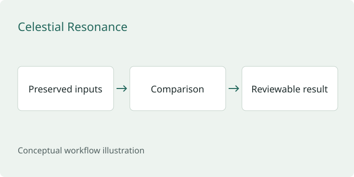

Celestial Resonance
Research infrastructure for repeatable experiments and reviewable results.
Design focus: preserve the inputs, comparison, and evidence behind a result.

The problem
An experimental result is difficult to trust or revisit when its inputs, baseline, and transformations are unclear. Research infrastructure needs to preserve enough context for another review.
My approach
Organize work around reproducible inputs, explicit comparison baselines, focused verification, and records that separate observations from inference. Keep a research recommendation distinct from permission to execute it.
The engineering tradeoff
Reusable boundaries help future work, but speculative abstractions add maintenance. Verification should cover the changed behavior and widen when uncertainty or shared dependencies justify it.
Scope
Public architecture summary of a private implementation. Internal source and research inputs remain private. This page does not establish production security performance or forecasting accuracy.
Read the full architecture summary on GitHub ↗
Related public example
This is an independent teaching example, separate from the private implementation.